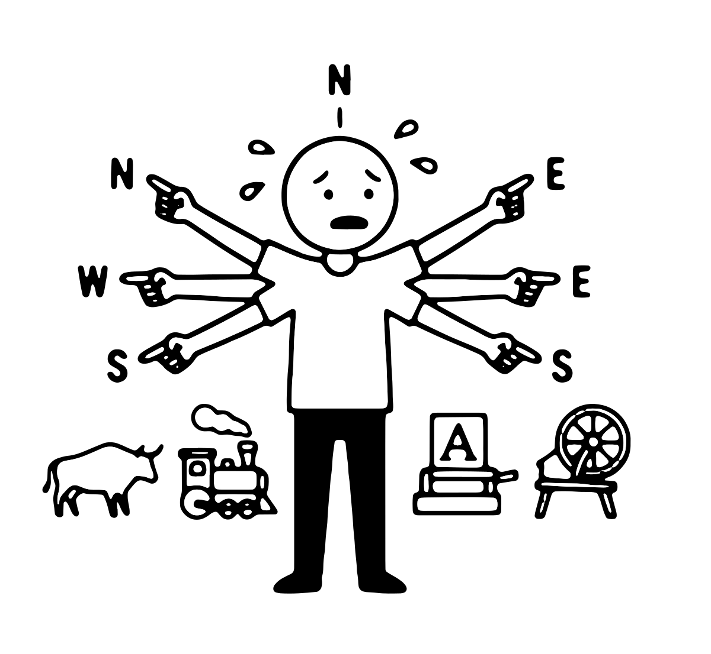
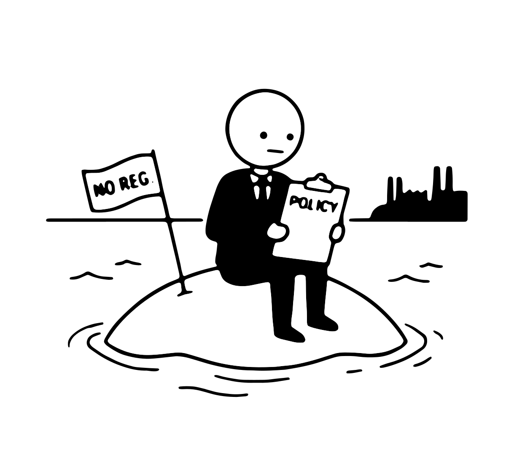
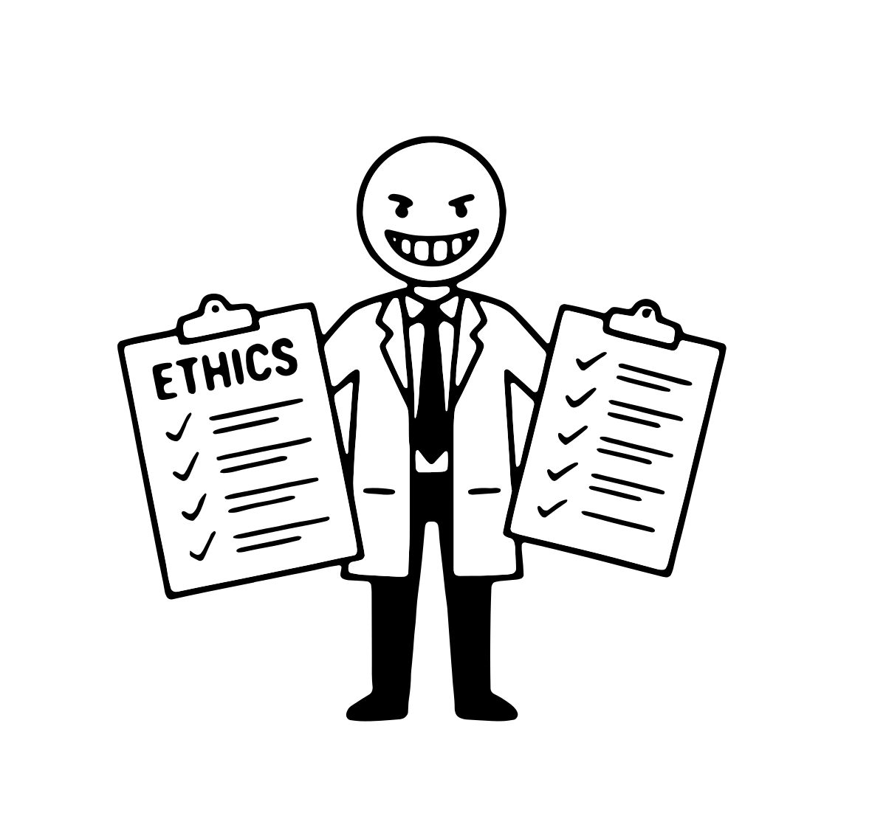
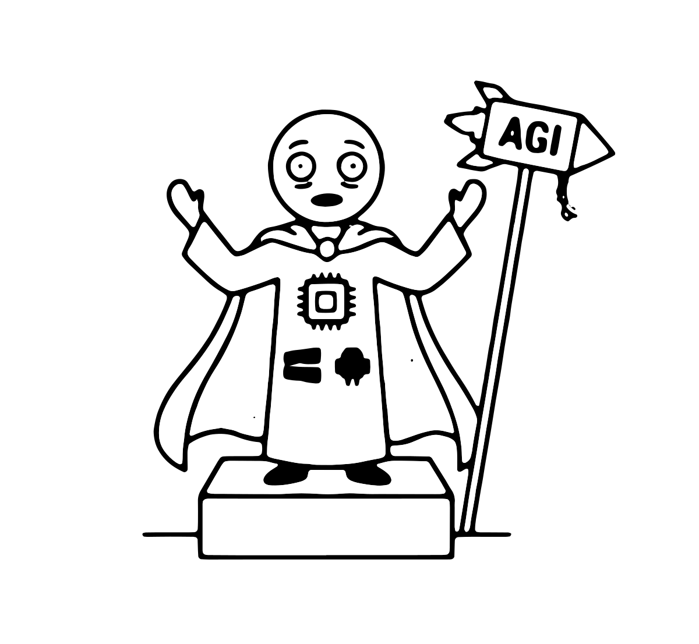
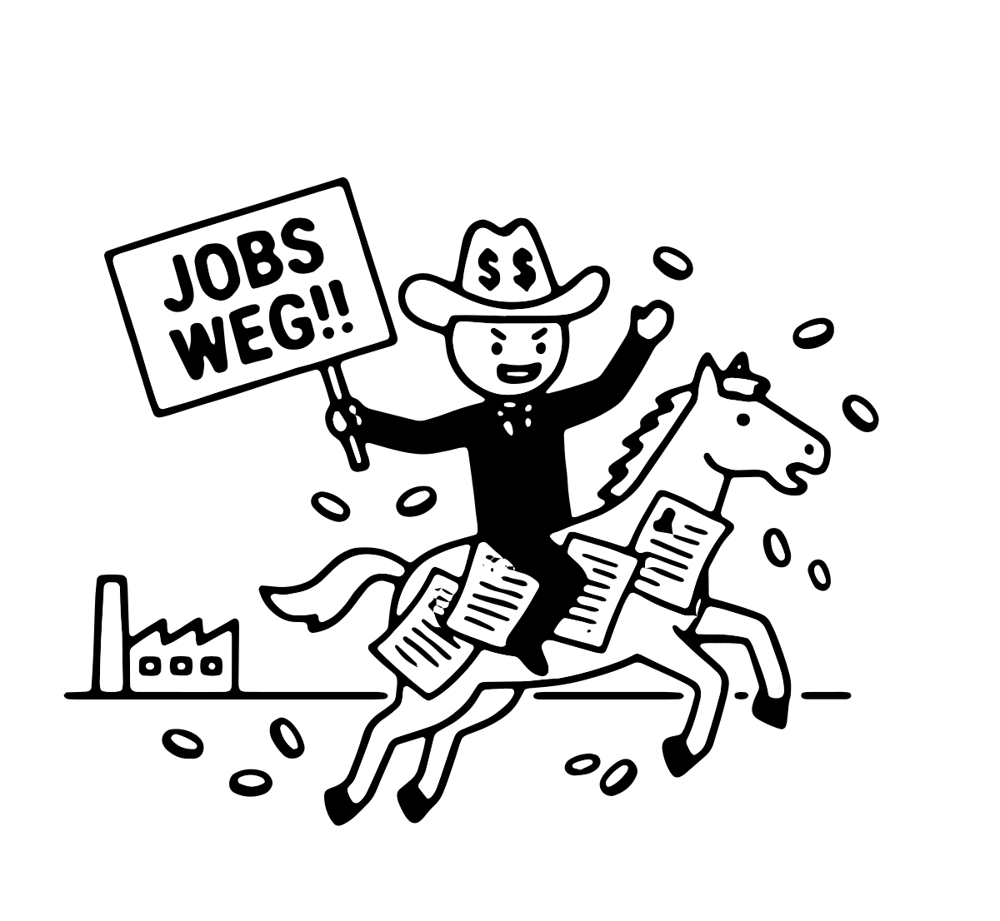
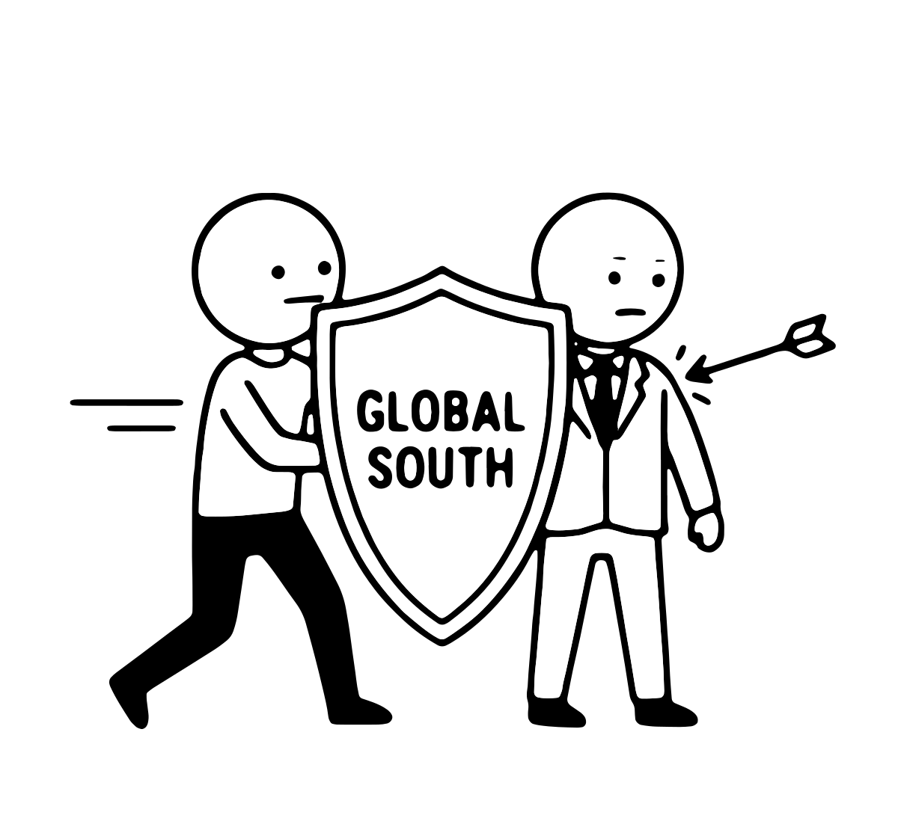

CC BY-SA 4.0
CC BY-SA 4.0
Wenn über KI-Regulierung diskutiert wird, sind die Argumente gegen sie oft erstaunlich stabil, unabhängig davon, wer sie vorbringt, in welchem Forum und zu welchem konkreten Vorhaben. Der Ausreden-Kompass dokumentiert zwölf dieser wiederkehrenden Argumentationsmuster, die einzeln oder in Kombination, dazu dienen, regulatorisches Handeln zu verzögern, zu delegitimieren oder strukturell zu blockieren.
Manche Muster schieben Verantwortung auf andere, andere verharmlosen den Handlungsbedarf, wieder andere münden in Resignation vor dem Technologischen und eine vierte Gruppe konstruiert Regulierung selbst als Schadensquelle. Die Zitate sind stilisiert, aber nicht erfunden. Ein Klick auf eine Karte öffnet weitere Erkäuterungen zur Kritik an der Position samt mit Quellenangaben.

Der Ablenker

Der Einzeller
Der Geopolitiker

Die Nebelkerze
Der Abgeklärte
Der Untergangsbeschwörer

Der Messias
Der Skalierer

Der Job-Cowboy
Der Perfektionist

Der falsche Ritter
Der Unverbindliche